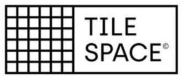

Trade Mark Journal No.2025/009 28 February 2025
WO0000001838983 (35)
Office of origin: Turkey
Date of International Registration:21 November 2024
Date of designation in the UK:
21 November 2024

- Class 35
- Advertising, marketing and public relations; organization of exhibitions and trade fairs for commercial or advertising purposes; office functions; secretarial services; arranging newspaper subscriptions for others; compilation of statistics; rental of office machines; systemization of information into computer databases; telephone answering for unavailable subscribers; business management, business administration and business consultancy; accounting; commercial consultancy services; personnel recruitment, personnel placement, employment agencies, import-export agencies; temporary personnel placement services; auctioneering; the bringing together, for the benefit of others, of a variety of goods, namely, chemicals used in industry, science, photography, agriculture, horticulture and forestry, manures and soils, unprocessed artificial resins and unprocessed plastics, fire extinguishing compositions, adhesives, enabling customers to conveniently view and purchase those goods, such services may be provided by retail stores, wholesale outlets, by means of electronic media or through mail order catalogues; the bringing together, for the benefit of others, of a variety of goods, namely, rubber, gutta-percha, gum, asbestos, mica and semi-finished synthetic goods made from these materials in the form of powder, bars, panels and foils included in this class, insulation, stopping and sealing materials, insulation paints, insulation fabrics, insulating tape and band, insulation covers for industrial machinery, joint sealant compounds for joints, gaskets, flexible pipes made from rubber and plastic, hoses made of plastic and rubber, junctions for pipes of plastic and rubber, pipe jackets of plastic and rubber, hoses of textile material, junctions for pipes, pipe jackets, connecting hose for vehicle radiators, enabling customers to conveniently view and purchase those goods, such services may be provided by retail stores, wholesale outlets, by means of electronic media or through mail order catalogues; the bringing together, for the benefit of others, of a variety of goods, namely, lighting installations, lights for vehicles and interior-exterior spaces, heating installations, central heating boilers, boilers for heating installations, radiators, heat exchangers, stoves, kitchen stoves, solar thermal collectors, steam, gas and fog generators, steam boilers, acetylene generators, oxygen generators, nitrogen generators, installations for air-conditioning and ventilating, cooling installations and freezers, electric and gas-powered devices, installations and apparatus for cooking, drying and boiling, cookers, electric cooking pots, electric water heaters, barbecues, electric laundry driers, hair driers, hand drying apparatus, sanitary installations, taps, shower installations, toilets, shower and bathing cubicles, bath tubs, toilet seats, sinks, wash-hand basins water softening apparatus, water purification apparatus, water purification installations, waste water purification installations, electric bed warmers and electric blankets, electric pillow warmers, electric and non-electric footwarmers, hot water bottles, filters for aquariums, aquarium filtration apparatus, industrial type installations for cooking, drying and cooling purposes, pasteurizers and sterilizers, enabling customers to conveniently view and purchase those goods, such services may be provided by retail stores, wholesale outlets, by means of electronic media or through mail order catalogues; the bringing together, for the benefit of others, of a variety of goods, namely, sand, gravel, crushed stone, asphalt, bitumen, cement, gypsum, plaster, concrete, marble blocks for construction, building materials made of concrete, gypsum, clay, potters' clay, stone, marble, wood, plastics and synthetic materials for building, construction, road construction purposes, non-metallic buildings, non-metallic building materials, barriers, natural and synthetic coatings in the form of panels and sheets, being building materials, bitumen cardboard coatings for roofing, bitumen coating for roofing, doors and windows of wood and synthetic materials, traffic signs not of metal, non-luminous and non-mechanical, for roads, monuments and statuettes of stone, concrete and marble, building glass, prefabricated swimming pools, aquarium sand, enabling customers to conveniently view and purchase those goods, such services may be provided by retail stores, wholesale outlets, by means of electronic media or through mail order catalogues.
TILE SPACE YAPI URUNLERI TICARET ANONIM SIRKETI
Representative: TURKTICARET.NET, ESENTEPE MAHALLESİ HARMAN 1 SOKAK,, HARMANCI GİZ PLAZA APT. NO 5/29,, SISLI, ISTANBUL, TURKEY